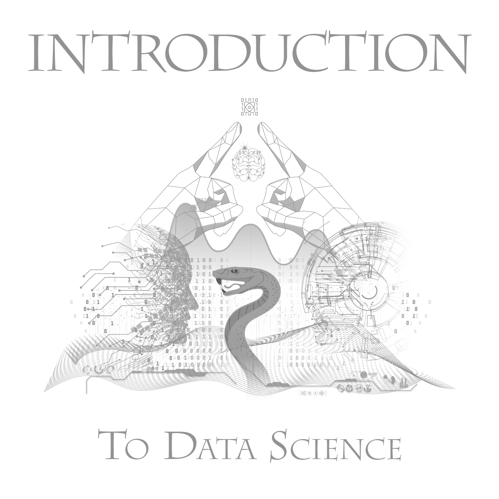

import numpy as np
n = 1000
q = 2
X = np.random.normal(size = n * q).reshape((n, q))
beta = [1.0, 2.0]
p = 1 / (1 + np.exp(-np.dot(X, beta)))
y = np.random.binomial(1, p, size = n)Demystifying Neural Networks
Intro to Data Science - Class 12
Giora Simchoni
gsimchoni@gmail.com and add #intro2ds in subject
Stat. and OR Department, TAU
Logistic Regression with Gradient Descent
Reminder: Logistic Regression (I)
- Observe \(n\) pairs \((x_i, y_i)\) \((i = 1, \dots, n)\)
- \(y_i \in \{0, 1\}\) binary outcomes
- \(x_i \in \mathbb{R}^q\) numeric predictors
- Model: \(Y_i|X_i \sim Bernoulli(p_i)\), so: \(E(Y_i|X_i = x_i)=P(Y_i = 1|X_i = x_i) = p_i\)
- Choose some link function \(g\) and model this transformation of \(E(Y_i|X_i = x_i)\)
- Typically for this case \(g\) is the logit function: \(g(E(Y_i|X_i = x_i)) = \text{logit}(p_i) = \log(\frac{p_i}{1-p_i})=x_i'\beta\)
- \(\beta\) a vector of \(q\) params
Reminder: Logistic Regression (II)
- And so we can write: \(E(Y_i|X_i = x_i)= P(Y_i=1|X_i = x_i;\beta) = p_i = g^{-1}(x_i\beta) = \frac{1}{1+e^{-x_i\beta}}\)
- Once we get our estimate \(\hat\beta\):
- We could “explain†\(Y_i\), the size and direction of each component of \(\hat\beta\) indicating the contribution of that predictor to the log-odds of \(Y_i\) being \(1\)
- We could “predict†probability of new observation \(x_i\) having \(Y_i=1\) by fitting a probability \(\hat p_i=\frac{1}{1+e^{-x_i\hat\beta}}\), where typically if \(\hat p_i > 0.5\), or \(x_i\hat\beta > 0\), we predict \(\hat{Y}_i=1\)
Maximum Likelihood
Under the standard Maximum Likelihood approach we assume \(Y_i\) are also independent and so their joint “likelihood†is:
\(L(\beta|X, y) = \prod_{i = 1}^n{P(Y_i|X;\beta)} = \prod_{i = 1}^n{P(Y_i = 1|X;\beta)^{y_i}P(Y_i = 0|X;\beta)^{1-y_i}}\)But what is \(P(Y_i = 1|X;\beta)\)?
\(L(\beta|X, y) = \prod_{i = 1}^n[g^{-1}(x_i\beta)]^{y_i}[1- g^{-1}(x_i\beta)]^{1-y_i}\)The \(\hat\beta\) we choose is the vector maximizing \(L(\beta|X, y)\)
Maximum Likelihood (II)
Take the log-likelihood which is easier to differentiate:
\(l(\beta|X, y)=\sum_{i=1}^n\ln{P(Y_i|X;\beta)} =\) \(\sum_{i=1}^n y_i\ln[g^{-1}(x_i\beta)] + (1-y_i)\ln[1- g^{-1}(x_i\beta)] =\)This looks Ok but let us improve a bit just for easier differentiation:
\(\sum_{i=1}^n \ln[1- g^{-1}(x_i\beta)] + y_i\ln[\frac{g^{-1}(x_i\beta)}{1- g^{-1}(x_i\beta)}]=\) \(\sum_{i=1}^n -\ln[1+ e^{x_i\beta}] + y_ix_i\beta\)
Maximum Likelihood (III)
Differentiate:
\(\frac{\partial l(\beta|X, y)}{\partial \beta_j} = \sum_{i=1}^n-\frac{1}{1+e^{x_i\beta}}e^{x_i\beta}x_{ij} + y_ix_{ij}=\sum_{i=1}^n x_{ij}(y_i-g^{-1}(x_i\beta))\)Or in vector notation:
\(\frac{\partial l(\beta|X, y)}{\partial \beta}=X'(y - g^{-1}(X\beta))\), where \(X\) is the \(n \times q\) data matrix.We would like to equate this with \(\vec0\) and get \(\hat\beta\) but there’s no closed solution.
At which point usually the Newton-Raphson method comes to the rescue.
But let’s look at simple gradient descent:
Gradient Descent
- Instead of maximizing log-likelihood, let’s minimize negative log-likelihood \(-l(\beta)\) (NLL)
- We’ll start with an initial guess \(\hat\beta_{t=0}\)
- The partial derivatives vector of \(-l(\beta)\) at point \(\hat\beta_t\) (a.k.a the gradient \(-\nabla l(\hat\beta_t)\)) points to the direction of where \(-l(\beta)\) has its steepest descent
- We’ll go a small \(\alpha\) step down that direction: \(\hat\beta_{t+1}=\hat\beta_t -\alpha \cdot[-\nabla l(\hat\beta_t)]\)
- We do this for \(I\) iterations or until some stopping rule indicating \(\hat\beta\) has converged
Let’s see that it works ! 😀
See it in python!
You’ve already been Neural Network-ing!
Call it a Neural Network
- Call our \(-l(\beta)\) “Cross Entropy”
- Call \(g^{-1}(X\beta)\) the “Sigmoid Function”
- Call computing \(\hat p_i\) and \(-l(\hat\beta)\) a “Forward Propagation†or “Feed Forward†step
- Call the differentiation of \(-l(\hat\beta)\) a “Backward Propagation†step
- Call our \(\beta\) vector \(W_{(q+1)\text{x}1}\), a weight matrix (add intercept, call it “bias”)
- Add stochastic gradient descent (SGD)
- Draw a diagram with circles and arrows, call these “neurons”
And you have a Neural Network*.
*Ok, We’ll add some stuff later
Cross Entropy
For discrete probability distributions \(P(X)\) and \(Q(X)\) with the same support \(x \in \mathcal X\) Cross Entropy could be seen as a metric of the “distance†between distributions:
\(H(P, Q) = -E_P[\log(Q)] = -\sum _{x\in {\mathcal{X}}}P(X=x)\log[Q(X=x)]\)In case \(X\) has two categories, and \(p_1=P(X=x_1)\), \(p_2=1-p_1\) and same for \(q_1,q_2\):
\(H(P, Q) = -[p_1\log(q_1) + (1-p_1)\log(1-q_1)]\)If we let \(p_1=y_i\) and \(q_1=\hat p_i=g^{-1}(x_i\hat\beta)\) we get:
\(H(y_i, \hat p_i) = -[y_i\log(\hat p_i) + (1-y_i)\log(1-\hat p_i)] =\) \(-[y_i\ln[g^{-1}(x_i\hat\beta)] + (1-y_i)\ln[1- g^{-1}(x_i\hat\beta)]]\)Which is exactly the contribution of the \(i\text{th}\) observation to the NLL \(-l(\hat\beta)\).
Sigmoid Function
If \(g(p)\) is the logit function, its inverse would be the sigmoid function:
\(g(p) = logit(p) = \log(\frac{p}{1-p}); \space\space g^{-1}(z) = \sigma(z) =\frac{1}{1+e^{-z}}\)
So: \(g^{-1}(g(p)) = \sigma(logit(p)) = p\)
Forward/Backward Propagation
Recall that each iteration of gradient descent included:
- Forward step: Calculating the NLL loss \(-l(\hat\beta)\)
- Backward step: Calculate the gradient \(-\nabla l(\hat\beta_t)\)
- Gradient descent: \(\hat\beta_{t+1}=\hat\beta_t -\alpha \cdot[-\nabla l(\hat\beta_t)]\)
Why “Forward”, why “Backward”?…
Reminder: Chain Rule
In our case differentiating \(l(\beta)\) analytically was manageable.
As the NN architecture becomes more complex there is need to generalize this, and break down the derivative into (backward) steps.
Recall that according to the Chain Rule, if \(y = y(x) = f(g(h(x)))\) then: \(y'(x)=f'(g(h(x)) \cdot g'(h(x)) \cdot h'(x)\)
Or if you prefer, if \(z = z(x); \space u = u(z); \space y = y(u)\) then: \(\frac{dy}{dx} = \frac{dy}{du} \cdot \frac{du}{dz} \cdot \frac{dz}{dx}\)
Let’s re-write \(-l(\beta)\) as a composite function:
- Multiplying \(\beta\) by \(x_i\) will be \(z_i = z(\beta) = x_i\beta\)
- Applying the sigmoid \(g^{-1}\) will be \(p_i = g^{-1}(z_i) = \frac{1}{1 + e^{-z_i}}\)
- Calculating the (minus) Cross Entropy will be: \(l_i = l(p_i) = y_i\ln(p_i) + (1-y_i)\ln(1 - p_i)\)
- So one element of \(-l(\beta)\) will be: \(l_i(p_i(z_i(\beta)))\)
Hence, Forward.
Now \(-l(\beta)\) is the sum of (minus) cross entropies: \(-l(\beta) = -\sum_i l_i(p_i(z_i(\beta)))\)
And we could differentiate using the chain rule like so:
\(-\frac{\partial l(\beta)}{\partial \beta_j} = -\sum_i\frac{\partial l_i}{\partial p_i} \cdot \frac{\partial p_i}{\partial z_i} \cdot \frac{\partial z_i}{\partial \beta_j}\)
Hence, Backward.
Each of these is simpler to calculate:
\(\frac{\partial l_i}{\partial p_i}= \frac{y_i - p_i}{p_i(1-p_i)}\)
\(\frac{\partial p_i}{\partial z_i} = p_i(1-p_i)\)
\(\frac{\partial z_i}{\partial \beta_j}=x_{ij}\)
And so:
\(-\frac{\partial l(\beta)}{\partial \beta_j} = - \sum_i \frac{y_i - p_i}{p_i(1-p_i)} \cdot p_i(1-p_i) \cdot x_{ij}\)
Which is excatly what we got analytically but now we can write our gradient descent iteration as a list of forward/backward steps.
Implementing NN in python
def forward(X, y, beta_hat):
z = np.dot(X, beta_hat)
p_hat = 1 / (1 + np.exp(-z))
l = y * np.log(p_hat) + (1 - y) * np.log(1 - p_hat)
nll = -np.sum(l)
return p_hat, nll
def backward(X, y, p_hat):
dldz = y - p_hat
dzdb = X.T
grad = -np.dot(dzdb, dldz)
return grad
def gradient_descent(alpha, beta_hat, grad):
return beta_hat - alpha * grad
def optimize(X, y, alpha, beta_hat):
p_hat, l = forward(X, y, beta_hat)
grad = backward(X, y, p_hat)
beta_hat = gradient_descent(alpha, beta_hat, grad)
return l, beta_hatAdding stochastic gradient descent (SGD) on mini-batches:
def lr_nn(X, y, epochs):
beta_hat = np.random.rand(X.shape[1])
alpha = 0.001
batch_size = 100
n = X.shape[0]
steps = int(n / batch_size)
for i in range(epochs):
print('epoch %d:' % i)
permute = np.random.permutation(n)
X_perm = X[permute, :]
y_perm = y[permute]
for j in range(steps):
start = j * batch_size
l, beta_hat = optimize(X_perm[start:start + batch_size, :],
y_perm[start:start + batch_size],
alpha, beta_hat)
print('Trained on %d/%d, loss = %d' % (start + batch_size, n, l))
return l, beta_hat
l, beta_hat = lr_nn(X, y, 50)See it in python!
Put it in a Neural Network Diagram
Binary Logistic Regression, is in fact a single neuron firing a sigmoid probability-like number between 0 and 1, for each sample:
LR as NN in Keras
from tensorflow.keras import Sequential
from tensorflow.keras.layers import Dense
from tensorflow.keras.optimizers import SGD
model = Sequential()
model.add(Dense(1, input_shape=(X.shape[1], ),
activation='sigmoid', use_bias=False))
sgd = SGD(learning_rate=0.1)
model.compile(loss='binary_crossentropy', optimizer=sgd)
model.fit(X, y, batch_size=100, epochs=50)See it in python!
Is that it?
- No 😀
The knee-jerk response from statisticians was “What’s the big deal? A neural network is just another nonlinear model, not too different from many other generalizations of linear models”. While this may be true, neural networks brought a new energy to the field. They could be scaled up and generalized in a variety of ways… and innovative learning algorithms for massive data sets.”
(Computer Age Statistical Inference by Bradley Efron & Trevor Hastie, p. 352)
Add Classes
\(C\) Neurons for \(C\) Classes
- fit a \(\beta\) vector for each class (or let’s start talking about \(W\))
- have \(C\) neurons for \(C\) classes
- where the output layer is the Softmax Function, to make sure the fitted \(\hat p\) sum up to 1:
\(\hat p_{i;c} = \text{softmax}(c,W_{(q+1)\text{x}C}, x_i)=\frac{e^{x_iw_c}}{\sum_{c=1}^{C} e^{x_iw_c}}\)
Where \(x_i\) is the \(i\)th row of \(X\) as before and \(w_c\) is the \(c\)th row of \(W^T\) (or \(c\)th column of \(W\))
This would be equivalent to multinomial logistic regression!
So the architecture for 2 classes would be:
And in Keras we would do:
from tensorflow.keras.utils import to_categorical
y_categorical = to_categorical(y)
model = Sequential()
model.add(Dense(2, input_shape=(X.shape[1], ),
activation='softmax', use_bias=False))
sgd = SGD(learning_rate=0.1)
model.compile(loss='categorical_crossentropy', optimizer=sgd)
model.fit(X, y_categorical, batch_size=100, epochs=50)See it in python!
Add Hidden Layers
Adding Hidden Layers
Where \(g()\) is some non-linear activation function, e.g. sigmoid (but not often used).
- Notice we are not in Logistic Regression land anymore
- The bias term (intercept) is re-instated
This is the MLP (Multi-Layer Perceptron).
Guess how long it’s been around.
Even now, the forward step is a simple formula:
\[\hat{p}_{n \times C} = softmax\{[\mathbb{1} \vdots \sigma([\mathbb{1} \vdots X]W^{(1)})]W^{(2)}\}\]
Call model.summary() and see that you can calculate the number of params yourself:
Model: "sequential"_________________________________________________________________ Layer (type) Output Shape Param # ================================================================= dense (Dense) (None, 4) 12 dense_1 (Dense) (None, 2) 10 =================================================================Total params: 22Trainable params: 22Non-trainable params: 0_________________________________________________________________Activation Functions
What about linear activations?
See HW.
See it in python!
Add Regularization
L1/L2 Regularization
You might have noticed neural networks intice you to add more and more params.
Therefore, NN are infamous for overfitting the training data, and some kind of regularization is a must.
Instead of minimizing some loss \(L\) (e.g. Cross Entropy) we add a penalty to the weights: \(\min_W{L(y, f(X; W)] + P(W)}\)
Where \(P(W)\) would typically be:
- \(P_{L_2}(W)=\lambda \sum_{ijk}(W^{(k)}_{ij})^2\)
- \(P_{L_1}(W)=\lambda \sum_{ijk}|W^{(k)}_{ij}|\)
- or both (a.k.a Elastic Net, but not quite): \(P_{L1L2}(W) = \lambda_1 \sum_{ijk}(W^{(k)}_{ij})^2 + \lambda_2 \sum_{ijk}|W^{(k)}_{ij}|\)
L1/L2 Regularization in Keras:
from tensorflow.keras import regularizers
model = Sequential()
model.add(Dense(4, input_shape=(X.shape[1], ), activation='relu',
kernel_regularizer=regularizers.l1(0.01),
bias_regularizer=regularizers.l2(0.01)))
model.add(Dense(2, activation='softmax',
kernel_regularizer=regularizers.l1_l2(l1=0.01, l2=0.01)))
sgd = SGD(learning_rate=0.1)
model.compile(loss='categorical_crossentropy', optimizer=sgd)
model.fit(X, y_categorical, batch_size=100, epochs=50, verbose=0)Dropout
How to take neurons with a grain of salt?
During each epoch, individual neurons are either “dropped out†of the net with probability \(1-p\) (i.e. their weight is zero) or kept with probability \(p\), so that a reduced network is left.
During prediction no Dropout is performed, but neurons output is scaled by \(p\) to make it identical to their expected outputs at training time.
Why does it work?
You could look at Dropout as an ensemble of neural networks! Each neuron can either count or not at each training step, so after 1K training steps you have virtually trained 1K slightly different models out of \(2^N\) possible (where \(N\) is no. of neurons).
Another explanation uses numerical analysis terms: with each epoch we “break†to randomly look at “close†solutions to the current optimal solution, this is increases our chances of reaching a global optimum
Dropout in
Keras(therateparameter is the “fraction of the input units to drop”):
from tensorflow.keras.layers import Dropout
model = Sequential()
model.add(Dense(4, input_shape=(X.shape[1], ), activation='relu'))
model.add(Dropout(0.2))
model.add(Dense(2, activation='softmax'))
sgd = SGD(learning_rate=0.1)
model.compile(loss='categorical_crossentropy', optimizer=sgd)
model.fit(X, y_categorical, batch_size=100, epochs=50, verbose=0)Early Stopping
Since NN are trained iteratively and are particularly useful on large datasets it is common to monitor the model performance using an additional validation set, or some of the training set. If you see no improvement in the model’s performance (e.g. decrease in loss) for a few epochs - stop training.
from tensorflow.keras.callbacks import EarlyStopping
model = Sequential()
model.add(Dense(4, input_shape=(X.shape[1], ), activation='relu'))
model.add(Dropout(0.2))
model.add(Dense(2, activation='softmax'))
sgd = SGD(learning_rate=0.1)
callbacks = [EarlyStopping(monitor='val_loss', patience=5)]
model.compile(loss='categorical_crossentropy', optimizer=sgd)
model.fit(X, y_categorical, batch_size=100, epochs=50,
validation_split=0.2, callbacks=callbacks)Keras
Keras is an API
- Keras is a high-level API “designed for human beings, not machines†developed by François Chollet
- It sits upon a popular DL backends such as Tensorflow, also by Google, and PyTorch by Meta
- “ease of use does not come at the cost of reduced flexibility”
- Seamless integration with the Pandasverse
Malaria!
The Malaria dataset contains over 27K (processed and segmented) cell images with equal instances of parasitized and uninfected cells, from hundreds of patients in Bangaladesh. The images were taken by a mobile application that runs on a standard Android smartphone attached to a conventional light microscope. The goal is “reduce the burden for microscopists in resource-constrained regions and improve diagnostic accuracy”.
This dataset is part of the
tensorflow_datasetlibrary which gives you easy access to dozens of varied datasets.Here we take only ~10% of the images as a Numpy array and resize them all to 100x100 pixels, for the sake of speed.
from sklearn.model_selection import train_test_split
images = []
labels = []
for example in tfds.as_numpy(malaria):
images.append(resize(example['image'], (100, 100)))
labels.append(example['label'])
if len(images) == 2500:
break
X = np.array(images)
y = np.array(labels)
X_train, X_test, y_train, y_test = train_test_split(X, y, test_size=0.20, random_state=42)
X_train = X_train.flatten().reshape((X_train.shape[0], -1))
X_test = X_test.flatten().reshape((X_test.shape[0], -1))
print(X_train.shape)
print(X_test.shape)(2000, 30000)
(500, 30000)The Sequential API
from tensorflow import keras
from tensorflow.keras import Sequential
from tensorflow.keras.layers import Dense, Dropout
model = Sequential()
model.add(Dense(300, input_shape=(30000,), activation='relu', name='my_dense_layer'))
model.add(Dense(100, activation='relu'))
model.add(Dense(50, activation='relu'))
model.add(Dense(1, activation='sigmoid'))Alternatively we could:
Make sure you get these numbers:
Model: "sequential_1"_________________________________________________________________ Layer (type) Output Shape Param # ================================================================= my_dense_layer (Dense) (None, 300) 9000300 dense_2 (Dense) (None, 100) 30100 dense_3 (Dense) (None, 50) 5050 dense_4 (Dense) (None, 1) 51 =================================================================Total params: 9,035,501Trainable params: 9,035,501Non-trainable params: 0_________________________________________________________________Are you at all worried?
Access layers and their weights:
[<keras.layers.core.dense.Dense at 0x1c8cb9c22b0>,
<keras.layers.core.dense.Dense at 0x1c88bc27940>,
<keras.layers.core.dense.Dense at 0x1c99f1de190>,
<keras.layers.core.dense.Dense at 0x1c8a5f61a90>](30000, 300)array([[-1.13830371e-02, 7.78465346e-03, -7.35715777e-03, ...,
1.00976881e-03, 1.46864448e-03, 4.35163453e-03],
[ 7.89240003e-04, 1.02443825e-02, -5.73266298e-03, ...,
-1.20754922e-02, 3.28857452e-03, -7.43750343e-03],
[-8.24765582e-03, 4.23339009e-03, -5.44310827e-03, ...,
1.01240575e-02, 1.36107337e-02, 6.78374618e-03],
...,
[-1.30265011e-02, 1.36442874e-02, 2.33473815e-03, ...,
1.07872337e-02, 7.84278661e-03, 8.28148052e-03],
[-9.09785647e-03, 9.59079154e-03, -3.70273832e-03, ...,
1.32227857e-02, -2.93281302e-03, 3.47271189e-03],
[ 6.11092709e-03, -8.58651847e-03, -9.20949504e-03, ...,
8.77743214e-03, 7.99531117e-05, 8.66886787e-03]], dtype=float32)Compiling your model:
For more initialization schemes, losses, metrics and optimizers:
Fitting the model:
See later the history object’s many fields.
Evaluate on test set:
test_loss, test_acc = model.evaluate(X_test, y_test, verbose=False)
print(f'Test accuracy for NN: {test_acc:.3f}')Test accuracy for NN: 0.628from sklearn.metrics import confusion_matrix
y_pred = (model.predict(X_test, verbose=0) > 0.5).astype(int).reshape(y_test.shape)
pd.DataFrame(
confusion_matrix(y_test, y_pred),
index=['true:yes', 'true:no'],
columns=['pred:yes', 'pred:no']
)| pred:yes | pred:no | |
|---|---|---|
| true:yes | 145 | 117 |
| true:no | 69 | 169 |
It’s OK to be underwhelmed.
Tuning params:
from tensorflow.keras.layers import InputLayer
from tensorflow.keras.optimizers import SGD
from scikeras.wrappers import KerasClassifier
def malaria_model(n_hidden, n_neurons, lrt):
model = Sequential()
model.add(InputLayer(input_shape=(30000, )))
for layer in range(n_hidden):
model.add(Dense(n_neurons, activation='relu'))
model.add(Dense(1, activation='sigmoid'))
model.compile(loss="binary_crossentropy",
optimizer=SGD(learning_rate=lrt),
metrics=["accuracy"])
return model
keras_clf = KerasClassifier(model=malaria_model, n_hidden=1, n_neurons=30, lrt=3e-3)from scipy.stats import reciprocal
from sklearn.model_selection import RandomizedSearchCV
params = {
'n_hidden': [0, 1, 2, 3],
'n_neurons': np.arange(1, 100),
'lrt': reciprocal(3e-4, 3e-2)
}
rnd_search_cv = RandomizedSearchCV(keras_clf, params, cv=5,
n_iter=10)
rnd_search_cv.fit(X_train, y_train, epochs=50,
validation_split=0.1, callbacks=callbacks)
print(f'Best test accuracy: {rnd_search_cv.best_score_:.2f}')
print(f'Best params: {rnd_search_cv.best_params_}')Best test accuracy: 0.69
Best params: {'lrt': 0.0004918307063493132, 'n_hidden': 3, 'n_neurons': 17}See also sklearn’s GridSearchCV() and KerasTuner for a more robust solution.
Saving and restoring a model:
Then:
array([[0.43842962],
[0.81921285],
[0.3252244 ]], dtype=float32)The HDF5 model saves the model’s architecture and hyperparameters, and all weights matrices and biases.
Also see the ModelCheckPoint() callback.
Few Excellent Books

